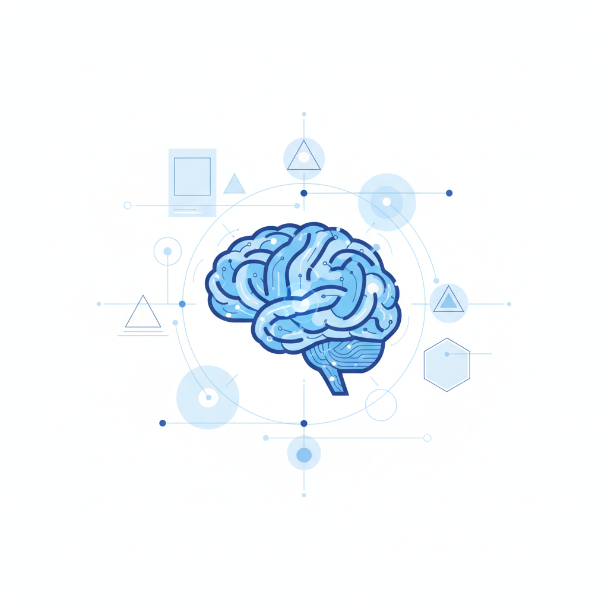
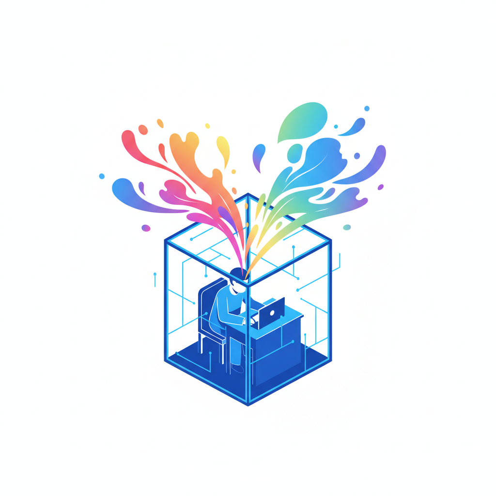

一百万行代码的秘密
OpenAI那个项目的规矩，具体到什么程度？
他们给Agent配了自定义代码检查器（linter），不是检查语法错误的那种，而是检查"品味"的——某个模块必须按某种分层方式组织，某些API调用必须走特定封装，连命名风格都有强制规范。然后定期跑一遍"垃圾回收"式的全局扫描，凡是偏离了预设架构的代码，不管功能上对不对，全部标记修正。
Martin Fowler 2026年的一篇文章管这种做法叫"harness engineering"——不是给AI更多能力，而是给它套上一层层的约束装置。Stripe的做法是在每次代码提交前跑一轮启发式检查器；OpenAI是用结构性测试确保Agent不会偏离架构意图。
这些约束看起来很笨。它们不理解代码的语义，不关心这段代码"想要"做什么。它们只检查格式、结构、命名——表面上和创造力没有任何关系。
但结果很难辩驳。
LangChain在2026年第一季度做了一个实验：不换模型，只优化Agent外围的约束系统——文档结构、验证循环、追踪机制。他们在Terminal Bench 2.0上的得分从52.8%跳到66.5%，排名从全球第30直接升到第5。不换引擎，只改规矩，效果比升级模型还大。
与此同时，行业数据显示88%的企业AI Agent项目没能进入生产环境。它们失败的原因不是模型不够强，而是没有足够好的约束系统。用那篇文章的原话说："If you're not the model, you're the harness"——你要么是AI本身，要么就是那套约束。
这让人困惑。我们一直以为智能越强，需要的规矩越少。但事实恰好相反。

笨规则的科学
控制论创始人W. Ross Ashby在1956年提出过一条定律：一个调节器必须拥有至少和被调节系统一样多的"多样性"（variety），才能有效控制它。你要管一个复杂系统，管它的手段必须和它一样复杂。
但2026年AI工程界的实践给出了一个完全相反的答案。
Birgitta Böckeler在Martin Fowler网站上的那篇文章把约束分成两类。第一类叫"前馈控制"（feedforward）——在AI动手之前就划好红线，比如代码检查器、类型系统、架构约束规则。第二类叫"反馈控制"（feedback）——AI做完之后检查结果，比如自动测试、静态分析、AI代码评审。两类缺一不可：只有前馈没有反馈，你制定了规矩但永远不知道它有没有被遵守；只有反馈没有前馈，AI就会反复犯同一个错误。
这套系统之所以有效，不是因为它和AI"一样复杂"。恰恰相反，它的有效性来自对复杂性的粗暴削减。
Böckeler用了Ashby定律的另一面来解释：与其让约束系统变得和AI一样复杂，不如限制AI输出的多样性。你不需要给AI配一个同样聪明的检查员——你只需要提前把它能做的事情砍到足够少，让一套简单的检查器就能覆盖。OpenAI的做法就是这样：强制所有代码遵循几种固定的服务架构模板（CRUD服务、事件处理器），把解空间压缩到可管理的范围。
这和直觉完全相反。我们以为好的管理是"在保持自由度的前提下增加检查"——又灵活又安全。但实际有效的做法是先砍掉大部分自由度，然后在剩下的窄带里精确验证。
这个逻辑有个名字。心理学家Patricia Stokes称之为"约束的强制函数"（forcing function）——当选择空间被人为缩小，搜索者被迫在更窄的领域内进行更深的探索，从而触及之前从未被使用的知识，建立全新的关联。
这不只是AI的故事。
苏斯博士的五十个词
1960年，Theodor Geisel——也就是苏斯博士——接下了一个赌约：用不超过50个不同的英文单词写一本完整的儿童书。作为参照，他前一本书《戴帽子的猫》用了236个词。50个词意味着他不能用大多数形容词，不能用复杂句式，甚至连"the"这种常用词都要精打细算。
据传记作者记载，Geisel为此画了流程图、做了词表、反复推倒重来。最终的成品是《绿鸡蛋和火腿》——半个多世纪以来最畅销的儿童读物之一。
这不是一个励志故事，而是一个结构性规律。
Rider University的心理学家Catrinel Tromp在一系列实验中发现，当创作者面对无限选择时，他们倾向于使用"最先想到的关联"——也就是最老套的那些。而当选择被人为限制，他们被迫进入更深的认知搜索，触及平时不会动用的知识储备，建立此前不存在的关联。Stokes为此写了一整本书，书名就叫《约束中的创造力》。
Annie Murphy Paul在她的研究综述中把这个现象概括为一句话："自由对创造力有害。"
这和AI的情况完全同构。当你给GPT-4或Claude一个完全开放的任务——"写一篇关于AI的文章"——它会调用最高频的语言模式，产出一篇任何人都能写、任何人都不会记住的东西。加上约束——禁止使用某些词、强制引用具体数据、限定结构——它的输出反而变得更有辨识度。
2024年发表在《Science Advances》上的一项研究给出了更精确的描述：AI工具提高了个体的创造力输出，但降低了群体的内容多样性。换句话说，当所有人都用同一个不受约束的AI，所有人的作品开始趋同。约束是打破这种趋同的唯一工具——因为每个人施加的约束不同，输出才不同。
这里出现了一个值得停下来想的推论。如果AI的创造力来自约束而非模型本身，如果人类的创造力同样来自约束而非"天赋"或"灵感"——那么创造力从来就不是我们以为的那种神秘能力。它更接近一种工程行为：设定边界，然后在边界内深挖。
AI没有变得像人。是它暴露了一个我们一直不愿承认的事实：人类的创造力比我们以为的更机械。

约束者就是创作者
Harvard Business Review 2026年3月刊登了一项研究，标题是"使用AI会扼杀创新——但不必如此"。
研究者发现的机制很简单：AI让知识复用变得太容易了。当你能瞬间获得一份"即时草稿、即时代码、即时分析"，你就失去了与困难问题搏斗的动力。而突破性的想法，几乎总是从那种搏斗中产生。团队倾向于接受AI给出的"足够好"的方案——这些方案反映的是训练数据中的既有共识，而不是任何新东西。
这就是为什么约束者的角色变得比模型本身更重要。
同一个Claude或GPT-4，在一个产品经理手里可能产出一份中规中矩的竞品分析，在另一个人手里却能产出令人意外的洞察。差异不在AI，在约束。后者可能禁止了"行业常见结论"，强制要求"至少一个你个人不同意的判断"，或者限定"只用一手数据，不用二手引述"。这些规矩看起来无理取闹，但它们做了AI自己做不到的事：把搜索方向推离了最容易到达的答案。
社会学家项飙可能会说，约束不是中性的。谁在写规矩，他的视野、品味和盲区就会成为AI的天花板。这话完全正确。但这恰恰是重点——既然AI的产出质量取决于约束质量，而约束质量取决于约束者的判断力，那么"设计约束"就不是一个技术动作，而是这个时代最核心的创造性行为。
大多数人还在讨论一个过时的问题：AI会不会取代我？
更准确的问题是：你有没有能力告诉AI什么不能做？
在一个所有人都能用同一个模型的世界里，模型本身不构成差异。约束才构成差异。而约束来自人。不是来自会使用AI的人，而是来自知道应该禁止AI做什么的人。